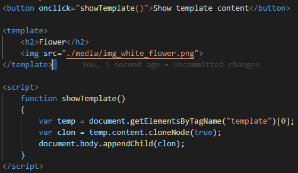

This element is used a as a container to hold some html content that is is hidden from the user when the page loads.
The content inside this element can be rendered later with javascript.
You can use this element if you have code that you want to go over and over again, but not until you ask for it. To do this without the template element you need to create code with javascript to prevent the browser from rendering the code.
This content is visible when inspecting element.
This is how its coded:
None
The global attribute is supported.